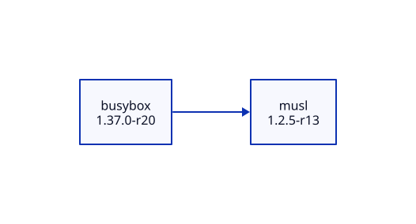
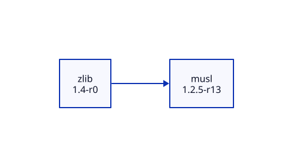
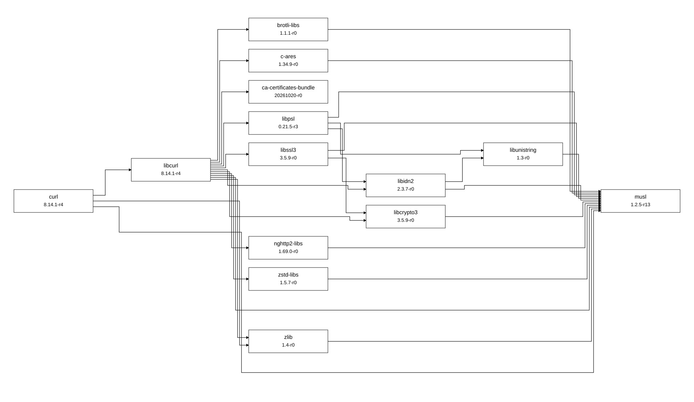

Проектная работа №2 · Конфигурационное управление · Вариант №22
Тимофеев Антон, ИКБО-70-25. Язык: Python 3.11 или новее.
Инструмент читает официальный индекс пакетов Alpine Linux, строит граф зависимостей и выводит его на языке D2. Получение зависимостей реализовано самостоятельно: используются urllib.request, tarfile, tomllib, json и другие модули стандартной библиотеки. Установка Python-пакетов через pip не нужна.
Каждая папка содержит самостоятельный запускаемый снимок приложения и собственные конфигурации.
| Папка | Результат этапа |
|---|---|
stage1 |
CLI, TOML, вывод шести параметров, проверка ошибок |
stage2 |
Чтение APKINDEX, поиск точной версии, прямые зависимости |
stage3 |
Рекурсивный BFS, глубина, фильтр, циклы, тестовый репозиторий |
stage4 |
Прямые и обратные зависимости через тот же BFS |
stage5 |
Вывод D2, три реальных графа, SVG, сравнение с apk dot |
tests |
Автоматические проверки конфигурации, данных, алгоритма и CLI |
build_stages.py обновляет снимки этапов из финального исходника; константа STAGE определяет доступные CLI-операции. Снимки не импортируют код соседних папок. prepare_examples.py воспроизводит учебные конфигурации и протоколы демонстраций.
Открыть PowerShell в корне репозитория:
python Workbook2/stage1/depgraph.py
python Workbook2/stage2/depgraph.py
python Workbook2/stage3/depgraph.py
python Workbook2/stage4/depgraph.py --reverse
python Workbook2/stage5/depgraph.py
python -m unittest discover -s Workbook2/tests -v
По умолчанию используется config.toml рядом с приложением. Можно передать другой файл через --config. Этот аргумент выбирает файл, а все параметры анализа берутся именно из TOML.
package = "A"
repository = "repository.json"
test_mode = true
version = "1.0"
max_depth = 10
filter_substring = ""
| Параметр | Назначение и проверка |
|---|---|
package |
Имя пакета; в тестовом режиме только заглавные латинские буквы |
repository |
HTTP(S) URL каталога архитектуры или APKINDEX.tar.gz; в тестовом режиме существующий JSON-файл |
test_mode |
Строго TOML boolean: true или false |
version |
Точная версия корневого пакета, начинается с цифры; отсутствующая версия вызывает ошибку |
max_depth |
Целое число 0–200; boolean не принимается вместо числа |
filter_substring |
Строка без управляющих символов; пустая отключает фильтр |
Относительный путь JSON разрешается относительно TOML, а не текущего каталога. Фильтрация чувствительна к регистру. Если фильтр исключает корневой пакет, конфигурация отклоняется. Неизвестные и отсутствующие ключи, неверные типы и поврежденный TOML вызывают понятную ошибку в stderr с кодом завершения 2. Успешное выполнение возвращает 0. Предел глубины 200 ограничивает рекурсию.
При запуске выводятся все шесть параметров в формате ключ = значение. Каждый параметр проверяется до запуска анализа. Готовые ошибочные конфигурации находятся в stage1/examples/invalid_*.toml, фактические сообщения — в stage1/examples/errors.txt.
python Workbook2/stage1/depgraph.py --config Workbook2/stage1/examples/invalid_max_depth.toml
Ожидается: Ошибка: max_depth: допустимо целое число от 0 до 200, код 2. Файл ошибок демонстрирует также неверное имя пакета, отсутствующий репозиторий, строку вместо boolean, пустую версию и фильтр, исключающий корень.
Для реального репозитория приложение загружает APKINDEX.tar.gz и читает текстовый член APKINDEX без извлечения файлов на диск. Поля P, V, D, p задают имя, версию, зависимости и предоставляемые виртуальные имена. Поиск корня выполняется строго по имени и версии. Прямые зависимости выводятся в исходной записи, например so:libc.musl-x86_64.so.1. Конфликты с префиксом ! не являются зависимостями.
python Workbook2/stage2/depgraph.py --config Workbook2/stage5/examples/curl.toml
У URL должны быть указаны ветка, секция и архитектура, например https://dl-cdn.alpinelinux.org/alpine/v3.22/main/x86_64. Ошибки HTTP, сети, архива, кодировки и отсутствия пакета обрабатываются. Тайм-аут сети — 30 секунд; размер архива и текста индекса ограничен 32 МиБ. Сохраненный официальный индекс в примерах позволяет воспроизвести отчет при последующих обновлениях Alpine.
Вершина содержит имя и версию. Корень имеет глубину 0. Рекурсивная функция обрабатывает весь текущий слой BFS, формирует следующий и вызывает себя один раз для следующего уровня. Множество seen исключает повторное расширение вершин, но ребра к уже посещенным вершинам сохраняются. Поэтому циклы и ромбы корректно отображаются. Вершины предельной глубины включаются, их зависимости уже не раскрываются.
Фильтр исключает совпадающие пакеты вместе с ребрами к ним, дальнейший обход через них не выполняется. Проверяются как имя зависимости, так и фактическое имя поставщика виртуальной зависимости. При отсутствии подходящей зависимости выводится ошибка вместо неполного графа.
Тестовый репозиторий имеет формат:
{
"A": {"version": "1.0", "dependencies": ["B"]},
"B": {"version": "1.0", "dependencies": ["A"]}
}
В комплектном графе есть ромб A → B → D, A → C → D, цикл D → A, лист E и изолированная вершина Z. Все ссылки проверяются при чтении JSON.
Пример в stage3/examples |
Ожидаемое поведение |
|---|---|
cycle.toml |
5 достижимых вершин, 6 ребер, цикл сохраняется |
depth1.toml |
Только A, B, C; два ребра |
depth0.toml |
Только A, без ребер |
filter.toml |
B исключен, D остается достижим через C |
isolated.toml |
Только Z |
python Workbook2/stage3/depgraph.py --config Workbook2/stage3/examples/depth1.toml
Фактический вывод каждого случая: stage3/examples/demo.txt. Сложность BFS после разрешения зависимостей — O(V + E), память — O(V + E); глубина рекурсии равна числу обработанных уровней.
python Workbook2/stage4/depgraph.py --config Workbook2/stage4/examples/cycle.toml --reverse
python Workbook2/stage4/depgraph.py --config Workbook2/stage4/examples/depth1.toml --reverse
Сначала по всему выбранному репозиторию строится обратная смежность, затем вызывается та же функция рекурсивного BFS. Вывод показывает направление обхода: A → D означает «от A к зависящему от него D». На глубине 1 для A находится D; на полной глубине находятся также B и C. Корень не считается собственной обратной зависимостью, хотя замыкающее цикл ребро сохраняется. Для Z обратных зависимостей нет. Глубина и фильтр действуют и в этом режиме. Фактические протоколы: stage4/examples/demo.txt.
Финальный CLI выводит только описание D2. Режим --reverse относится к этапу 4 и в финальном CLI не предлагается. Идентификаторы и подписи экранируются, порядок вывода стабилен, изолированные вершины сохраняются.
python Workbook2/stage5/depgraph.py --config Workbook2/stage5/examples/curl.toml
python Workbook2/stage5/examples/generate_real.py
d2 Workbook2/stage5/examples/curl.d2 Workbook2/stage5/examples/curl.svg
Вторая команда воспроизводит три D2-файла из сохраненного индекса стандартной библиотекой Python. D2 нужен только для преобразования готового текста в изображение. При сохранении stdout из Windows PowerShell 5 рекомендуется явно задавать UTF-8; готовые .d2 уже записаны в UTF-8.
| Пакет и версия | Вершины | Ребра | Результат сравнения с apk dot |
|---|---|---|---|
| busybox 1.37.0-r20 | 2 | 1 | Совпадение |
| zlib 1.4-r0 | 2 | 1 | Совпадение |
| curl 8.14.1-r4 | 14 | 28 | Совпадение |



Снимок загружен 11.11.2026 из Alpine v3.22/main/x86_64. SHA-256, версии и размеры графов записаны в stage5/examples/snapshot.json. Для контрольного сравнения запускался штатный apk dot в контейнере Alpine с пустой базой установленных пакетов и тем же локальным индексом. Образ закреплен по digest в compare_apk.py. Результаты находятся в *.apk.dot, сообщения — в *.apk.stderr.txt, разности множеств ребер — в comparison.json.
python Workbook2/stage5/examples/compare_apk.py
Для этого отдельного контрольного скрипта требуется работающий Docker. Само приложение не вызывает apk, Docker или сторонние средства получения зависимостей. При сравнении имя@версия нормализуется в имя-версия, повторяющиеся ребра сворачиваются. Для всех трех примеров разности пусты. Штатный DOT подписывает ребра виртуальными именами so:...; наша диаграмма показывает разрешенные пакеты без этих подписей, поэтому оформление отличается при совпадающей структуре.
На момент подготовки отчета пройдены 25 автоматических тестов, включая шесть параметров, поврежденные данные, точную версию, виртуальные зависимости, подписанный APKINDEX со склеенными gzip-потоками, сетевую ошибку, циклы, ромбы, фильтр, глубину, обратный обход, стабильность D2 и запуск всех пяти CLI.
Программа является визуализатором одного выбранного репозитория, а не решателем установки APK. Для зависимостей поддерживаются операторы =, <, >, <=, >=, ~ и виртуальные provides; при нескольких кандидатах выбирается максимальная версия, затем имя. Сортировка учитывает числовые части, суффиксы alpha/beta/pre/rc/cvs/svn/git/hg/p и ревизию -rN; специальная семантика ведущих нулей Alpine не моделируется. Глобальная совместимость ограничений, приоритеты поставщиков, install_if и объединение main/community не реализованы. Из-за этого на других пакетах возможны расхождения с apk; они не скрываются за неполным результатом. Подпись индекса не проверяется: по умолчанию используется HTTPS, пакеты не скачиваются и не исполняются.
README.pdf — печатная версия этого README, сформированная Chromium из README.html через механизм печати в PDF, эквивалентный Ctrl+P → «Сохранить как PDF». Для ручного повторения открыть README.html в Chrome/Edge, нажать Ctrl+P, выбрать A4 и сохранить PDF. HTML и PDF содержат локальные изображения, подключение к интернету для просмотра не требуется.
Этапы сохраняются отдельными коммитами feat(workbook2): ...; итоговый отчет — отдельным коммитом документации. Изменения первой работы не включаются в эти коммиты.